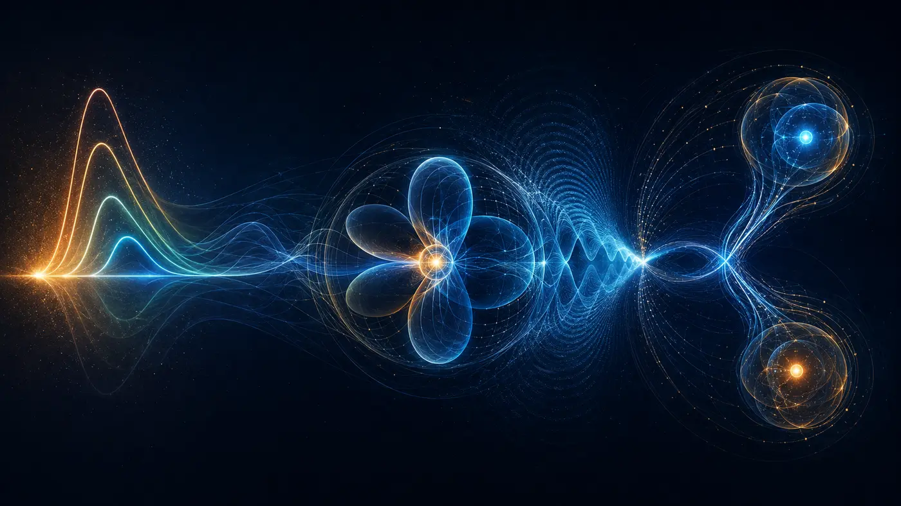

Research archive 1900 → 1964
Reconstruct quantum mechanics
from the original papers.
Follow the ideas that turned energy quanta into operators, wavefunctions, probability amplitudes, spin and entanglement.
Start here / Lecture notes and computation
Derive it. Calculate it. Check it.
Build the foundations.
Three original starter chapters connect mathematical tools to quantum predictions. Each includes worked examples and exercises. The first numerical lab checks a particle-in-a-box spectrum against its exact solution.
Mathematical foundations
Complex amplitudes, inner products, normalization and orthogonality.
Read the chapter ↗ Chapter 02States and measurement
State vectors, observables, the Born rule and a worked two-level system.
Read the chapter ↗ Chapter 03The infinite square well
Boundary conditions, normalized eigenstates, quantized energies and a numerical check.
Read the chapter ↗This is an early learning project. Further chapters are planned; the complete quantum-mechanics curriculum is still in development.
01 / Roadmap
The central idea
Do not begin with a finished formalism. Watch it being invented.
Each paper is a move in a long argument: a classical failure, a proposed structure, an experimental test, then a deeper question. Rebuild the mathematics as you go.
02 / Original papers
Foundational corpus
The paper atlas
Explore 41 selected papers and milestones, from Planck to Bell. Each overview is an original educational summary. Linked sources include original publications, archival records and translations; some require institutional access.
Progress and theme are saved only in this browser. No account is required.
No paper matches that search.
03 / Research method
From reading to research
Reproduce each conceptual leap.
For each landmark, recover the problem it answered, rebuild the mathematics, and test one consequence computationally.
- 01
Recover the failure
State what the classical model could not explain.
- 02
Rebuild the derivation
Translate the notation and expose every assumption.
- 03
Compute one result
Reproduce a spectrum, probability or inequality.
- 04
Interrogate meaning
Separate the result from its interpretation.